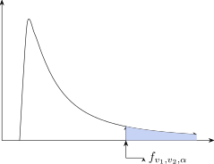
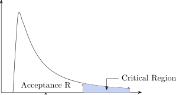

4.1 Contingency Table
A contingency table is used when results are put in cells as: Rows and Columns.
| a | b | \(R_1\) |
| c | d | \(R_2\) |
| \(C_1\) | \(C_2\) | \(g\) |
\(\therefore \) a \(2\times 2\) contingency table has 1 df.
| \(c_1R_1/g\) | \(c_1R_2/g\) |
| \(c_1R_2/g\) | \(c_2R_2/g\) |
The table below shows the result of prevention of a disease by vaccination
| Attacked | Not Attacked | ||
| Vaccinated | 20 | 50 | 70 |
| Not Vaccinated | 15 | 15 | 30 |
| 35 | 65 | 100 |
Test the hypothesis that vaccination is effective against the disease.
Solution
| \(\dfrac {35\times 70}{100}\) | \(\dfrac {65\times 70}{100}\) |
| \(\dfrac {35\times 30}{100}\) | \(\dfrac {65\times 30}{100}\) |
The \(\chi ^2\) distribution depends on the df, therefore we write \(\chi ^2_v\). That is \(v=n-1\) is called degree of freedom is the number of expected frequencies which can be varied independently \(2\times 2\) contingency table has \(v=1\) df because a column loses 1 df and the rows lose 1 df to give \(v=(2-1)(2-1)\). The table below shows the seven results for a random sample of 4146 people on the type of house and compound.
| Detail | Data | Flats | Total | |
| Chelstone | 95 | 297 | 362 | 754 |
| Northmead | 175 | 417 | 362 | 954 |
| Kabwata | 703 | 994 | 861 | 2556 |
| Total | 973 | 1708 | 1585 | 4266 |
Does the type of housing vary between the compounds.
\(H_0:\) The type of housing and compound are independent.
\(H_1:\) The type of housing and compound are dependent.
\[\chi ^2=\frac {\sum (O-e)^2}{e}=33.48\]
\[\chi ^2_{4,0.05}=\]
F Value = 0.01
The P-value of 0.01 is less than our level of significance = 0.05 \(\implies \) reject \(H_0\) and accept \(H_1\).
Analysis of variance is used to check the variability of more than two samples since we can not use the
four
\(H_0:\mu _1=\mu _2\)
\(H_1:\mu _1\neq \mu _2\)
\(\mu _1>\mu _2\)
\(\mu _1<\mu _2\)
\((*)\) One way ANOVA is used for either column or row
\((*)\) Two way ANOVA is used fro resting both rows and columns.
\(H_0:\) There is no difference between fertilizers
\(\mu _1=\mu _2=\mu _3=\mu _4\), \((\mu _i=\mu )\hspace {0.1cm}i=1,2,3,4\)
\(H_1:\) At least two fertilizers are different \((\mu _i \neq \mu )\)
Example
| \(F_1\) | \(F_2\) | \(F_3\) |
| 3 | 2 | 5 |
| 2 | 4 | 2 |
| 1 | 3 | 4 |
| 2 | 5 | 1 |
\begin {align*} T(\text {sum of all n observations}) & = T =\sum x_{ij}\\\\ SS_T = \text {Total sum of squares} &= SS_T = \sum x^2_{ij}-\frac {T^2}{n}\\\\ SS_B = \text {Between samples sum of squares} & = SS_B = \sum _{j=1}^{k}\frac {T_j^2}{n_j}-\frac {T^2}{n}\\\ SS_W = \text {Within sample sum of squares} &= SS_W =SS_T - SS_B\\\\ MS_{\varepsilon } & =\text {mean square error} = \frac {SS_W}{n-k}\\ \end {align*}
| Squares of Variance | SS | df | MS | F-statistics |
| Between Sample | \(SS_B\) | \(v_1=k-1\) | \(\dfrac {SS_B}{k-1}=MS_B\) | \(F-\dfrac {MS_B}{MS_{\varepsilon }}\) |
| Within Sample | \(SS_{\varepsilon }\) | \(v_2=n-k\) | \(\dfrac {SS_{\varepsilon }}{n-k}=MS_{\varepsilon }\) | |
| Total | \(SS_T\) | \(n-1\) | ||

Assumptions Made In Analysis Of Variance
- The \(k\) parent population from which the samples are drawn are normally distributed with respective means \(\mu _1, \mu _2,....... , \mu _n\).
- The samples drawn are randomly and independently.
- The population have equal and stable variances (Homoscedasticity).
- The effects are additive. This means that \(x_{ij}\), the j\(^{\text {th}}\) observation in the i\(^{\text {th}}\) sample or the class
or made up of class an overall effect \(\mu \).
Sum of squares identity \(SS_T = SS_C + SS_E\) \[\underbrace {\sum _{i=1}^k \sum _{j=1}^{n_i}(x_{ij}-\overline {\overline {x}})^2}_{SS_T} =\underbrace {\sum _{i=1}^k n_i(\overline {x}_i-\overline {\overline {x}})^2}_{SS_B} +\underbrace {\sum _{i=1}^k\sum _{j=1}^{n_i}(x_{ij}-\overline {x}_i)^2}_{SS_W}\]
Read it as the sentence it is: the total spread of every observation about the grand mean splits exactly into the spread between group means and the spread within groups. The two right-hand terms must use different centres – the grand mean \(\overline {\overline {x}}\) for the first, each group’s own mean \(\overline {x}_i\) for the second – and that is the whole content of the identity. Using the same centre in both would not add up.
Proof \begin {align*} \sum ^k_{i=1}\sum _{j=1}^k(x_{ij}-\overline {\overline {x}})^2 & =\sum ^k_i\sum ^n_j(\overline {x}_i-\overline {x})+(x_{ij}-\overline {x}_i)^2\\\\ & = \sum ^k_i \sum ^n_j \Bigg [(\overline {x}_i-\overline {\overline {x}})^2+(x_{ij}-\overline {x}_i)^2+2(\overline {x}_i-\overline {\overline {x}})(x_{ij}-\overline {x}_i)\Bigg ]\\\\ & = \sum ^k_i n (\overline {x}_i-\overline {\overline {x}})^2+\sum ^k_i\sum ^n_j(x_{ij}-\overline {x}_i)^2+2\sum ^k_j\sum _j^n(\overline {x}_i-\overline {x})(x_{ij}-\overline {x}_i) \end {align*}
\[\implies \hspace {1cm} SS_T = SS_C + SSE\]
| \(T_1\) | \(T_2\) | \(T_3\) | \(T_4\) | \(T_5\) | ||
| \(R_1\) | 5 | 9 | 3 | 2 | 7 | 26 |
| \(R_2\) | 4 | 7 | 5 | 3 | 7 | 26 |
| \(R_3\) | 8 | 8 | 2 | 4 | 9 | 31 |
| \(R_4\) | 6 | 6 | 3 | 1 | 4 | 20 |
| \(R_5\) | 3 | 9 | 7 | 4 | 7 | 30 |
| 26 | 39 | 20 | 14 | 34 | 133 = q | |
| \(C_1\) | \(C_2\) | \(C_3\) | \(C_4\) | \(C_5\) | ||
Test whether there is any significance difference between the treatment and \(\alpha = 0.025\)
- Set up the hypothesis
\(H_0:\) \(\mu _1=\mu _2=\mu _3=\mu _4=\mu _5\)
\(H_1:\) At least two are different
- We set \(\alpha = 0.05\)
\(N=rc=5\times 5=25\) \[\text {Correction factor}\hspace {0.5cm}=\frac {g^2}{N}=\frac {133^2}{25}\hspace {1cm}\implies cf = 707.56\] -
Test statistic \begin {align*} SS_T & =\sum \sum x^2_{ij}-cf\\ &=\Big [5^2+9^2+3^2+2^2+...............+7^2\Big ]-707.56\\ &=863-707.56\\ \implies \hspace {1cm} SS_T &=155.5 \end {align*}
\begin {align*} SS_C & = \frac {1}{r}\sum t_i^2-cf\\ &=\frac {1}{5}\Big [26^2+39^2+20^2+14^2+34^2\Big ]-707.56\\ &=\frac {1}{5}[3949]-707.56\\\\ \implies \hspace {0.5cm }SS_C &=82.3 \end {align*}
\begin {align*} SS_T &=SS_C +SS_E\\\\ \implies \hspace {0.5cm} SS_E &= SS_T-SS_C\\ &=155.5-82.3 \\ &=73.2 \end {align*}
| Source of Variation | df | SS | MS | F |
| Columns | \(c-1=4=v_1\) | 82.3 | \(MS=\dfrac {82.3}{4}=20.57\) | \(F=\dfrac {MSC}{MSE}=\dfrac {20.57}{3.66}\) |
| Error | \((rc-1)-(c-1)\) | 73.2 | \(MSE=\dfrac {73.2}{20}=3.60\) | \(F=5.62\) |
| \(=24-4=20=v_2\) | ||||
\[F_{v_1,v_2,{\alpha }}=F_{4,20,0.05}=5.80\]

We accept \(H_0\) and \(H_1\), since our statistic \(F=5.60\) lies in the acceptance region.
\(\implies \hspace {0.5cm}\) There is no difference between them.
| Source of Variation | df | SS | MS | F |
| Between Rows | \(r-1=v_1=3\) | \(SS_R\) | \(\dfrac {SS_R}{r-1}=MS_R\) | \(F_R=\dfrac {MS_R}{MSE}\) |
| Withing the Columns | \(c-1=v_2=2\) | \(SS_C\) | \(\dfrac {SS_C}{c-1}=MS_C\) | \(F_C=\dfrac {MS_C}{MSE}\) |
| Errors | \((rc-1)-(c-1)-(r-1)\) | \(SSE\) | \(\dfrac {SSE}{v_3}=MSE\) | |
| Total | \(rc-1=v_3=6\) | |||
\[SSE = SST-SS_R-SS_C\]
The data below gives the results of variate of the maize against these types of fertilizers.
| variate | ||||
| \(v_1\) | \(v_2\) | \(v_3\) | ||
| \(f_1\) | 17 | 25 | 25 | 69 |
| \(f_2\) | 8 | 10 | 0 | 18 |
| \(f_3\) | 12 | 19 | 11 | 42 |
| \(f_4\) | 11 | 10 | 6 | 27 |
| Total | 156 |
Do the data provide evidence at \(\alpha =1\%\) that
- there is a different between the variates
- there is a difference between the fertilizers
- Calculate the correction factor \(\displaystyle {cf=\frac {g^2}{rc}}\)
- Total sum of the squares \(\displaystyle {SS_T=\sum \sum ^k_{ij}x^2_{ij}-cf}\)
- Sum of squares of columns \(\displaystyle {SS_C=\frac {1}{r}\sum c^2-cf}\)
- Sum of square of rows \(\displaystyle {SS_R=\frac {1}{c}\sum r^2_i-cf}\)
- \(SSE=SS_T-SS_R-SS_C\)
\[df: v_1=2, v_2=3, v_3=6\] \begin {align*} &(rc-1)-(r-1)-(c-1)\\ &(12-1)-(4-1)-(3-1)\\ &11-3-5\\ &6=v_3 \end {align*}
\[\text {We have that}\hspace {0.3cm} F(\text {Row})=F_{{0.05},3,6}=4.76\hspace {0.3cm} \text {and}\hspace {0.3cm}F(\text {Column})=F_{0.05,2,6}=5.14\]
Reject \(H_0\)
The Least Significant Difference Test (LSD) \[\text {The test statistic for the LSD is}\hspace {0.5cm} \text {LSD}=t_{\alpha ,v}\hspace {0.1cm}\times \hspace {0.1cm}\sqrt {\frac {1}{n_1}+\frac {1}{n_2}}\hspace {0.3cm},\hspace {0.5cm} v=(n_1+n_2)-2\]
We shall use \(\widehat {S}=MSE\)
When \(H_0\) is rejected we proceed further for LSD test otherwise not
| 1 | 2 | 3 | 4 | 5 | 6 | ||
| 1 | 1 | 3 | 6 | 4 | 3 | 2 | |
| 2 | 1 | 4 | 4 | 8 | 5 | 1 | |
| 3 | 3 | 6 | 7 | 8 | 4 | 3 | |
| 4 | 2 | 3 | 2 | 3 | 2 | 1 | |
| 7 | 16 | 19 | 23 | 14 | 7 | 81 | |
| Mean | 1.75 | 4.0 | 4.75 | 5.75 | 3.5 | 1.75 | |
| Total | |||||||
\begin {align*} (1)\hspace {0.4cm} v_1\hspace {0.2cm}Vs\hspace {0.2cm} v_2\hspace {0.2cm}: v_2-v_1=2.25\\\\ (2)\hspace {0.4cm}v_1\hspace {0.2cm}Vs\hspace {0.2cm} v_3\hspace {0.2cm}:1,v_3=3\\\\ (3)\hspace {0.4cm} v_1\hspace {0.2cm}Vs\hspace {0.2cm} v_4 \hspace {0.2cm}: v_1,v_4=4 \end {align*}
\begin {align*} t_{0.05,6} & =1.943\\\\ LSD &=1.96\times \sqrt {MSE}\sqrt {\Big (\frac {1}{4}+\frac {1}{4}\Big )} \end {align*}
If LSD \(>\) Diff \(v_1,v_2\), lies in the C.R then they are significant different.
\(MSE=1.57\), find LSD statistic.
Design of Experiments
| A | B | D | C |
| D | A | C | D |
| C | D | A | B |
Randomized Block design